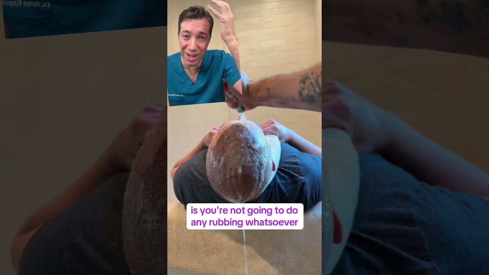

Waves After a Hair Transplant: Protecting the Investment While Hair Recovers
A hair transplant and a wave pattern have one thing in common: both are long games won by patience. In the months after a procedure, your scalp is healing and transplanted grafts are settling — and the brushing, compression and product habits of wave training have to wait their turn. Dr. Kopelman (@drkopelman) demonstrates proper post-transplant washing in the video below. Read this guide as general principles only: your own surgeon's aftercare instructions outrank everything written here, every time.
The healing phase: hands off the routine
In the first weeks, aftercare is a medical routine, not a hair routine. Washing is typically gentle — lukewarm water, mild shampoo, fingertips or pouring rather than scrubbing — exactly the careful technique demonstrated in the video. There is no brushing for waves in this phase, no pomades unless your clinic approves them, and nothing tight on the head: grafts are vulnerable while they anchor, and tight headwear, friction and pressure are the enemies of this stage.
This is the hardest part for a waver: watching the pattern go while doing nothing. Reframe it. You are not pausing your hair journey — you are protecting the investment the rest of the journey will be built on. Hair that heals well can be trained later; grafts lost to impatience cannot be un-lost.
The middle months: gentle habits return
As your surgeon clears you for more normal care — and only then — habits return in order of gentleness. Normal washing first. Light moisturising once the clinic approves products. Soft brushing, briefly and without pressure, only when your surgeon says the grafts are secure — for many people that conversation happens months in, not weeks, and the timeline is individual.
Headwear returns on the same permission. When it does, choose loose, clean and soft: a clean satin-lined cap worn gently, never a tight durag tie, and never for long stretches until you are cleared for it. Keep every item that touches the healing scalp freshly washed — cleanliness around recovering skin is not a preference, it is protection.
Returning to wave training
Full wave training — real brush sessions, real compression, real wolfs — resumes only with your surgeon's explicit go-ahead, and it resumes gradually: soft brush before medium, minutes before hours, compression lighter and shorter than your old standard. The transplanted hair and your native hair may also behave differently at first — different texture, different growth — and your angles and products may need adjusting to the new reality.
Keep your clinic in the loop at every stage rather than guessing from timelines online, including this one. Bodies heal at their own pace, procedures differ, and the only aftercare plan that matters is the one written for your head. The waves will wait. Build the base right and they will be there when the foundation is ready for them.
Watch: Dr. Kopelman demonstrates proper scalp washing after a transplant — technique straight from a surgeon
Video: “Washing Your Scalp Properly After a Hair Transplant” by Dr. Kopelman (@drkopelman) · Watch on YouTube
Shop the gear
Everything in this guide runs on the right gear: a durag that holds compression without slipping, a cap that stays put, and fabric that treats your hair right. The durag.store launch lineup is built to that standard — dual-layer construction, long tails, and stitching made to survive the routine. Join the launch list and use code GOLDSTANDARD for 15% off your first order.
Keep learning
- The Wash and Style Method: The Complete Wash-Day System for Waves — Basic · Wash & Hair Care
- Wash and Style for Beginners: Your First Wave Wash Day, Simplified — Basic · Wash & Hair Care
- How to Wash 360 Waves Without Wrecking the Pattern — Intermediate · Wash & Hair Care
Sources: Video — “Washing Your Scalp Properly After a Hair Transplant” by Dr. Kopelman (@drkopelman), youtube.com. Guide written by the durag.store Wave Lab.